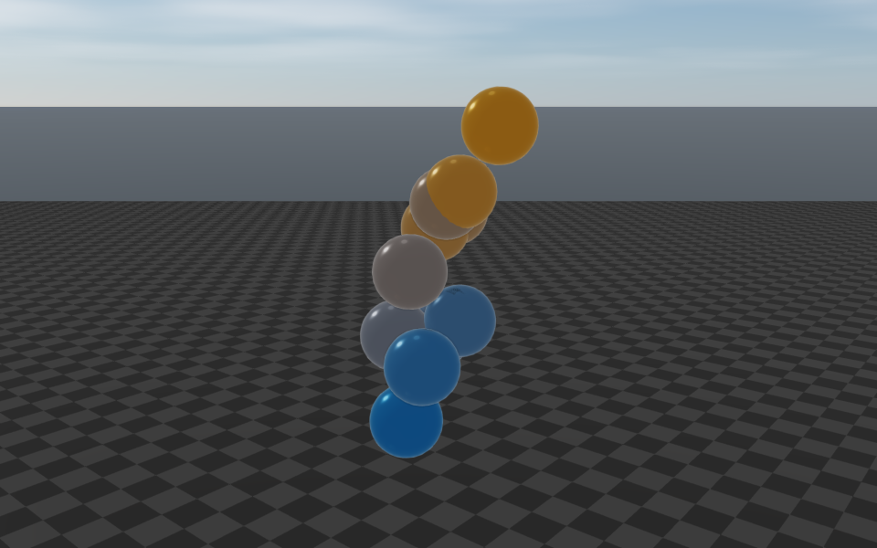
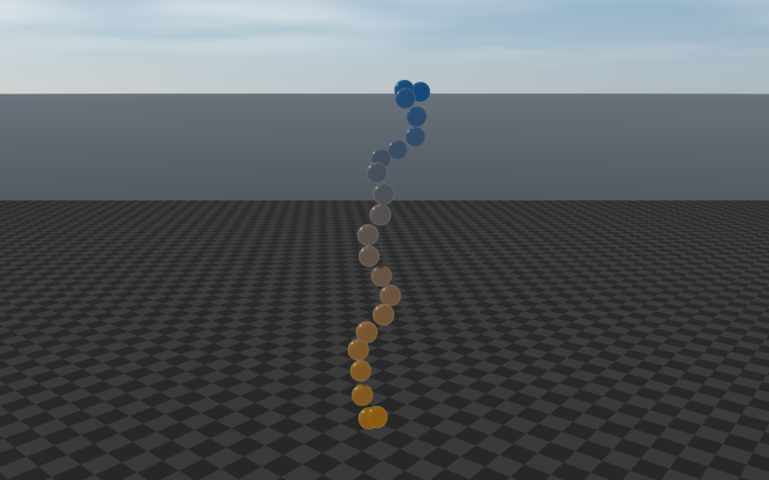
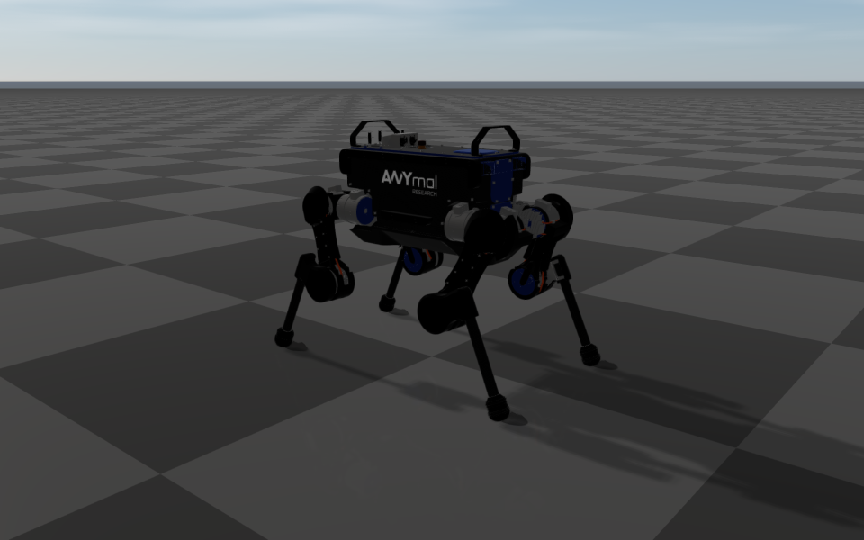
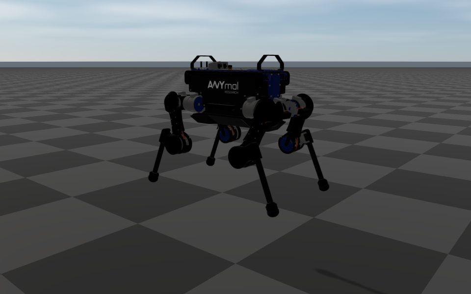
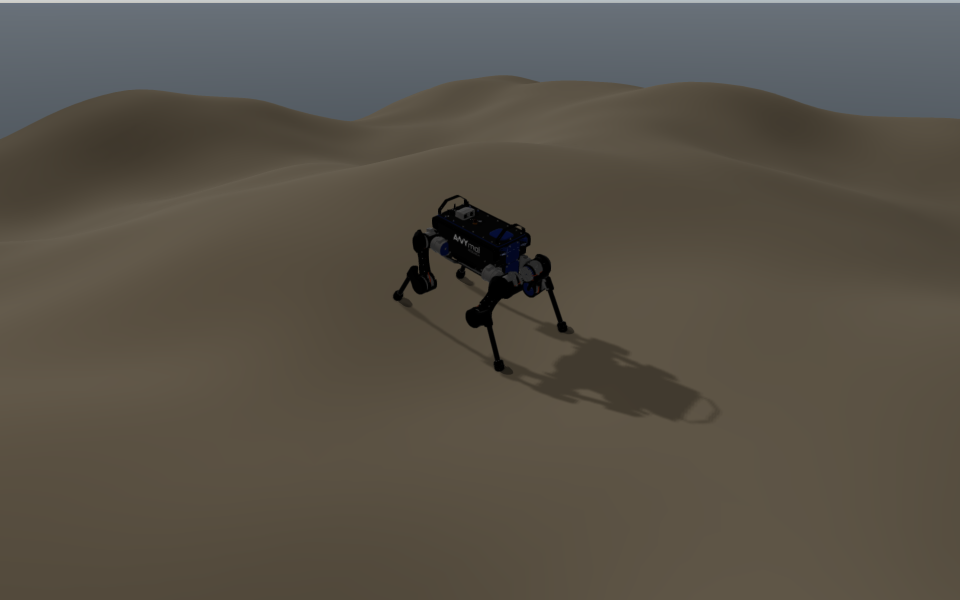
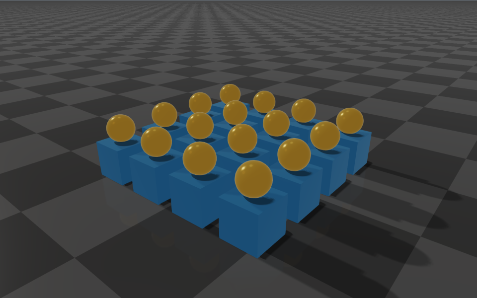

Benchmark
This page reports timing comparisons between RaiSim and another widely used multi-body physics engine (MuJoCo) on seven workloads: articulated chains, the ANYmal quadruped standing, falling and standing on rough terrain, a pile of rigid primitives, and Theo Jansen’s Strandbeest, whose 42 closed kinematic loops make it a test of loop constraints. The measurements come from the private release-validation suite, with the machine and workload settings recorded below. For general tuning guidance, see Performance.
Environment
All numbers on this page were collected on a single machine with the following configuration.
Component |
Detail |
|---|---|
Machine |
Desktop with an AMD Ryzen 9 3950X (16 cores, 32 threads, Zen 2), 64 GB of memory. |
Operating system |
Ubuntu 26.04.1 LTS, Linux 7.0, x86-64. |
Compiler |
Clang 20.1.8, C++20. |
Benchmark run |
October 5, 2026, from the RaiSim 2.7 development tree (revision |
RaiSim build |
|
MuJoCo build |
MuJoCo 3.13.0, compiled from source as part of the benchmark suite with the same compiler
and its own |
Threading |
Single threaded, pinned to one core with |
Metric |
Wall-clock seconds of each benchmark run, measured by the benchmark launcher. This includes
building the scene, which takes a few milliseconds. The Strandbeest is the exception: its
row reports the simulation loop alone (see Results). Lower is better. |
Settings |
Each benchmark and backend was run three times with its default arguments (the step counts listed below). The table and the charts report the median; the table also shows the minimum and maximum. The RaiSim and MuJoCo variants use matching scene parameters and the same time step, so the two engines simulate equivalent scenes. |
Measure the distributed package
The comparison runner and its MuJoCo backend are maintained in the private engine repository. They
are not build targets in raisim2Lib. The results below describe that recorded run, rather than
a benchmark of the installed 2.8.1 package.
To measure the binary package on your machine, build the public timing examples:
cmake -S . -B build-examples -DCMAKE_BUILD_TYPE=Release -DRAISIM_EXAMPLE=ON
cmake --build build-examples --target anymal_standing_benchmark \
articulated_system_benchmark --parallel 12
OMP_NUM_THREADS=1 OPENBLAS_NUM_THREADS=1 MKL_NUM_THREADS=1 \
./build-examples/examples/anymal_standing_benchmark --steps=1000000
On Windows, build with --config Release and run
build-examples\bin\anymal_standing_benchmark.exe. Repeat the same command at least three times,
keeping the package version, scene, timestep, step count, and machine fixed. These examples measure
RaiSim only and do not reproduce the private comparison scenes or the published ratios. See
Build, Test, and Benchmark for other available timing examples.
What the benchmarks simulate
Each scene is described below with its articulation (joint types and degrees of freedom), its collision and contact content, the integration time step, and the number of simulation steps. “DOF” is the number of generalized velocity coordinates the dynamics solves for. A floating base contributes 6 DOF (3 translation + 3 rotation). Scenes without a ground are shown above a floor for reference.
Benchmark ( |
Steps |
Scene details |
|---|---|---|
|
100,000 |
 One articulated chain with a fixed base and 10 links joined by 10 spherical joints (3 DOF each) → 30 DOF. Each joint has a spring-damper whose rest angle bends it by 90°, so the hanging chain curls up and keeps moving. No collision geometry (the spheres are visual only), so there is no contact: this is pure articulated forward dynamics. Time step 0.001 s. |
|
100,000 |
 Same as |
|
1,000,000 |
 One ANYmal quadruped: floating base + 12 revolute joints = 18 DOF, under PD position control. It stands on a flat ground plane. ANYmal’s collision geometry is primitive shapes (a trunk box plus cylinders and spheres on the legs); the four feet rest on the ground, giving about four persistent contacts. Friction coefficient 0.8, time step 0.002 s. |
|
100,000 |
 The same ANYmal (18 DOF), but no ground is added: the robot falls freely under gravity. There is no contact, so this isolates floating-base articulated dynamics. Time step 0.002 s. |
|
200,000 |
 One ANYmal (18 DOF) on a procedurally generated fractal height-map terrain (20 m × 20 m, 100 × 100 samples, 3 fractal octaves). Contacts form between the feet and the terrain cells. Time step 0.002 s. |
|
100,000 |
 No articulated system. 32 rigid bodies, 16 boxes (0.4 m cubes) and 16 spheres (radius 0.15 m), arranged in a 4 × 4 grid with 0.6 m spacing, each sphere dropped onto a box, on a flat ground plane. Contacts are box–ground and sphere–box primitive pairs (neighboring boxes are 0.2 m apart). Time step 0.002 s. |
|
3,000 |

Theo Jansen’s Strandbeest, a 12-legged walking linkage driven by one crank, imported from OpenUSD: floating base + 73 revolute joints = 79 DOF. Its 42 closed loops are hinge closures, each two pins on the hinge axis: 84 pin constraints, all coupled through the crank. A velocity-controlled crank turns once per second, and the machine walks about 3.8 m on its 12 feet in the 3 s. Time step 0.001 s. The MuJoCo variant is the same model converted to MJCF, its loops as connect equalities, stiffened until they stay as tightly closed as RaiSim’s: the worst loop gap over the run is 25 µm in RaiSim and 28 µm in MuJoCo. |


Results
In the recorded runs, RaiSim was 2.50× to 6.21× faster than MuJoCo across these seven workloads. The charts below show both the median timings and the relative speedup.


Benchmark |
RaiSim median (min–max) |
MuJoCo median (min–max) |
Speedup |
|---|---|---|---|
Chain20 speed |
0.569 (0.566–0.570) |
3.535 (3.533–3.551) |
6.21× |
Heightmap ANYmal speed |
1.152 (1.151–1.160) |
5.519 (5.498–5.567) |
4.79× |
Chain10 speed |
0.283 (0.283–0.286) |
1.093 (1.092–1.096) |
3.86× |
Strandbeest (simulation loop) |
0.155 (0.154–0.155) |
0.470 (0.470–0.475) |
3.03× |
Primitive speed |
3.376 (3.357–3.395) |
8.804 (8.754–8.822) |
2.61× |
ANYmal falling |
0.283 (0.283–0.287) |
0.732 (0.731–0.733) |
2.59× |
ANYmal standing |
5.519 (5.466–5.740) |
13.819 (13.805–13.861) |
2.50× |
The Strandbeest row times its 3,000 simulation steps alone: 52 µs per step in RaiSim and 157 µs in MuJoCo. Loading the scene is left out because the two engines do different work there: RaiSim imports the OpenUSD file (about 0.02 s), while MuJoCo loads the prepared MJCF. Including it, the whole runs take 0.178 s and 0.478 s, a ratio of 2.69.
Absolute times depend on hardware, compiler, and scene configuration, so treat them as relative magnitudes rather than fixed specifications.
Interpreting the comparison
These measurements describe the seven scenes and configurations above. They do not isolate the contribution of the dynamics algorithm, contact solver, or implementation details, and do not establish a speedup for other scenes or package versions. Use the public timing examples and your application workload when evaluating the current binary package.